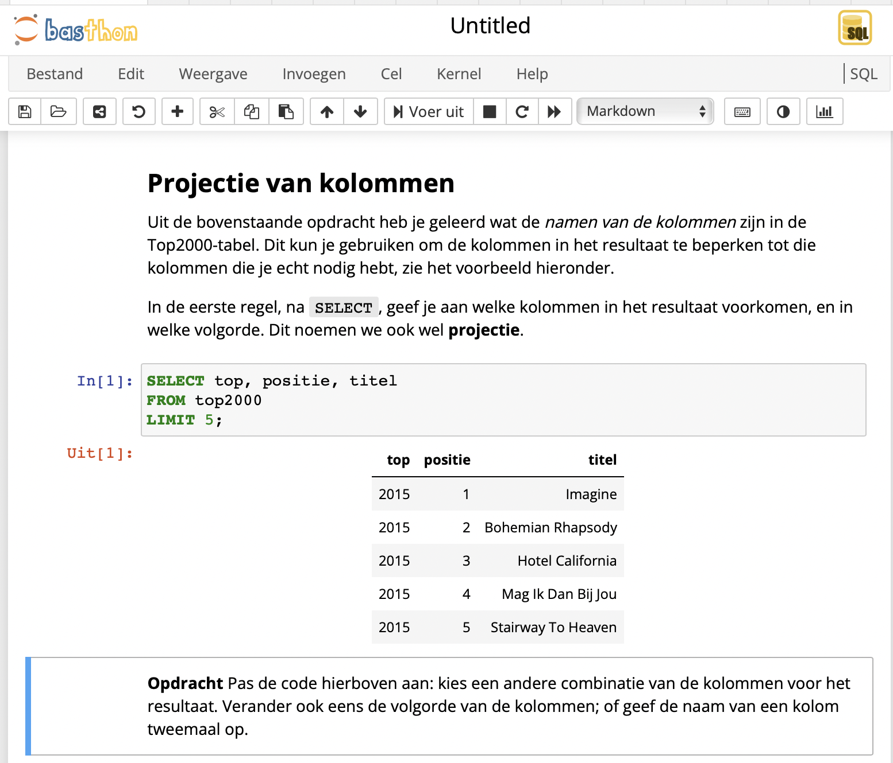

Presentatie#
Als je in Basthon op de meeste rechtse knop hierboven klikt (in de vorm van een histogram), kom je in de RISE presentatie-mode.
De onderstaande cel alleen uitvoeren in Jupyter Lab (niet in Basthon).
%LOAD data/top2000.db
Databases met Jupyter Notebook#
i&i conferentie april 2023
Eelco Dijkstra
Inhoud#
wat is Jupyter Notebook?
hoe gebruik je dit voor (Database) onderwijs?
hoe pas je een Notebook aan?
het Jupyter ecosysteem
keuzethema’s in Jupyter
Wat is Jupyter Notebook?#
een Notebook bestaat uit code-cellen en tekst-cellen
tekst-cel: uitleg (met figuren en formules)
code-cel: uitvoerbaar
je kunt het notebook aanpassen
experimenteren met de code
Figuur#

Jupyter Notebook in het onderwijs#
uitleg in het notebook
met interactieve voorbeelden
scaffolding: zo (in)compleet als nodig
(en later, opdrachten en toetsvragen)
Interactieve presentaties met Jupyter Notebook#
SELECT *
FROM top2000
LIMIT 5;
| top | positie | titel | artiest | jaar |
|---|---|---|---|---|
| 2015 | 1 | Imagine | John Lennon | 1971 |
| 2015 | 2 | Bohemian Rhapsody | Queen | 1975 |
| 2015 | 3 | Hotel California | Eagles | 1977 |
| 2015 | 4 | Mag Ik Dan Bij Jou | Claudia De Breij | 2011 |
| 2015 | 5 | Stairway To Heaven | Led Zeppelin | 1971 |
Cellen#
cel: selecteren via cursor (single-click), pijltjes
cel: uitvoeren met “pijltje” bovenin, of Shift-Enter
cel: double-click: “edit-modus”
Kernel#
kernel: voert code-cellen uit
kun je herstarten (enz.) via kernel-menu
SELECT *
FROM top2000
WHERE artiest = 'Queen'
ORDER BY positie
LIMIT 5;
| top | positie | titel | artiest | jaar |
|---|---|---|---|---|
| 2016 | 1 | Bohemian Rhapsody | Queen | 1975 |
| 2017 | 1 | Bohemian Rhapsody | Queen | 1975 |
| 2018 | 1 | Bohemian Rhapsody | Queen | 1975 |
| 2019 | 1 | Bohemian Rhapsody | Queen | 1975 |
| 2015 | 2 | Bohemian Rhapsody | Queen | 1975 |
Notebook in de browser#
Jupyter-aanpak:
UI in de browser
kernels (en data) in de server
Basthon-versie:
kernels (en data) in de browser
“statische website”
Voordelen Basthon#
Basthon: “zandbak” voor Python (en andere kernels)
geen server nodig (alleen statische website)
privacy (geen tracking)
veilig - voor computer en voor server/data
zandbak in de browser: veilig voor computer
data in zandbak: veilig voor server-data
veilig experimenteren met code en data
Zelf aan de slag#
Database-notebook:
Notebook aanpassen#
cel editen: double-click (via Shift-Enter weer geformatteerd)
cel toevoegen: “+” in menu (en onderaan automatisch)
cel verplaatsen: pijltjes in menu (en copy/paste)
cel type aanpassen: menu Code/Markdown (of Esc-Y / Esc-M)
Zelf aan de slag#
voeg zelf een opdracht toe
na aanpassing: downloaden via “Bestand” -> Bewaar (of “floppy”)
uploaden: via “Bestand” -> Open
downloaden van database
via code-cel met
.backup(binair) of.dump(SQL)
uploaden van database (via “Bestand” -> Open)
(helaas: naam nog niet aan te passen…)
Publiceren van notebook enz.#
online cursus, periode mei-juni
publiceren van Jupyter Notebooks
aanpassen van Jupyter Book - lesmateriaal
gebruik van versiebeheer (git, GitHub)
Jupyter ecosysteem#
Jupyter Notebook: UI (browser), kernels (server)
hosting nodig - (o.a. Jupyter Hub)
Jupyter Lab: UI met meerdere notebooks, Markdown
(idem)
Jupyter Book: bundelen van notebooks tot “boek”
online “boek”: statische website
o.a. voor lesmateriaal
uitvoerbaar via server (e.g. MyBinder)
Ontwikkelingen#
kernel van server naar browser
publiceren met Jupyter Book, MyST
INF keuzethema’s in Jupyter#
INF keuzethema’s: open leermaterialen
Jupyter Book als voorkeurs-formaat
met extensies voor opdrachten en toetsvragen
Jupyter Book in combinatie met git (GitHub): versiebeheer
Online cursus mei-juni over gebruik en aanpassen
Databases-teams: meld je aan#
thema-team Databases
organiseren van het materiaal
voorlichting, vragen (forum)
(klein) onderhoud
gebruikersgroep Databases
uitwisselen van ervaring
feedback op materiaal
vragen